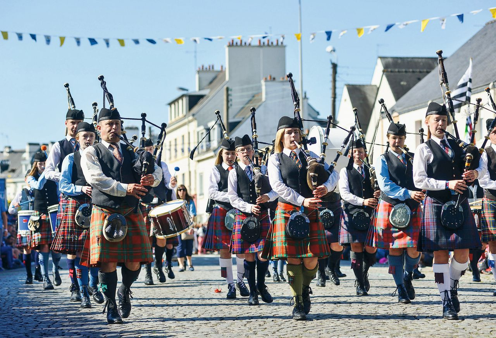

Instruments traditionnels
La Bretagne est célèbre pour ses instruments de musique uniques comme le biniou, la bombarde et la harpe celtique.
- Biniou : Une conrnemuse bretonne utilisée dans les fest-noz et autres événements.
- Bombarde : Un instrument à vent à anche double, souvent joué en duo avec le biniou
- Harpe Celtique : utilisée dans la musique bretonne et celtique, elle est reconnue pour sa sonoritédouce.
Festivals de Musique
La Bretagne organise de nombreux festivals de musique, notamment le Festival Interceltique de Lorient, qui attire des artistes et des visiteurs du monde entier.
